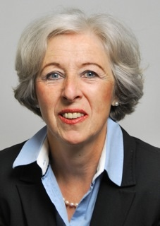

Perfil

A proprietária de Mehring Translations é a tradutora diplomada alemã Veronika Mehring–von Lillienskiold.
Veronika Mehring–von Lillienskiold formou-se nas universidades de Heidelberg, Lisboa e Nice para tradutora diplomada de Português e Francês (com a especialidade de direito).
Antes de vir para a Holanda há mais de 30 anos, trabalhou como tradutora autarca e intérprete ajuramentada de Português e Francês na Alemanha. Depois de ter feito um exame adicional para Holandês na universidade de Leiden, especializou-se em traduções do Holandês para o Alemão, principalmente de textos jurídicos.
- linguas: Alemão (língua materna), Holandês, Português e Francês
- desde 1975 traduções do Português e do Francês para o Alemão
- desde ca. 1985 também traduções do Holandês para o Alemão
- cerca de 15 anos de experiência como professora de Alemão em empresas e pessoas particulares
- em 2003 ajuramentada para o Alemão no tribunal de comarca da Haia
- em 2009 inscrita no registo holandês Register Beëdigde Tolken en Vertalers (RBTV)
- em 2012 inscrita no registo da Câmara de Comércio da Haia sob o nr. 55086764
Participação nas asscociações seguintes
- 1975 – 1980 membro do Bundesverband der Dolmetscher und Übersetzer e.V. (BDÜ)
- em 1990 filiou-se à Nederlandse Genootschap van Tolken en Vertalers (NGTV)
- faz parte do Duitse Kring e do Taalkring Portugees, ambos sub-organizações da NGTV
- membro da Deutsche Bibliothek e da Genootschap Nederland-Duitsland